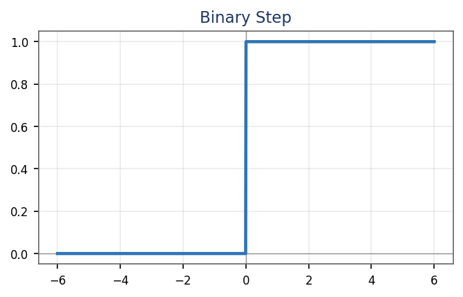
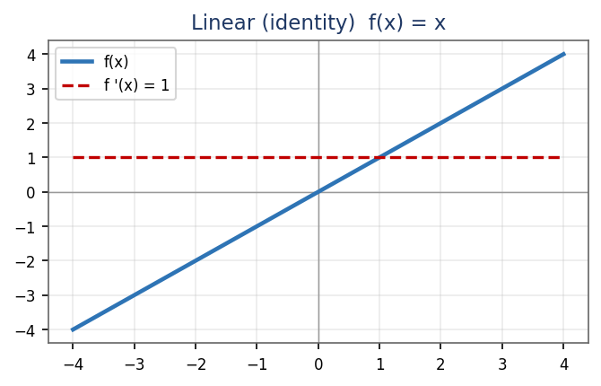
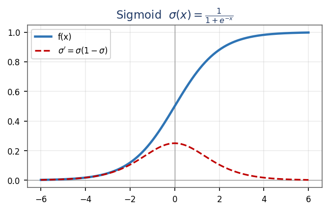
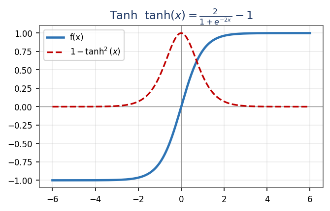
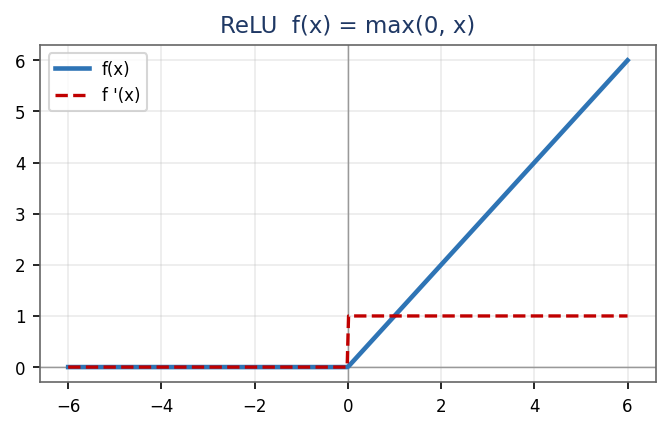
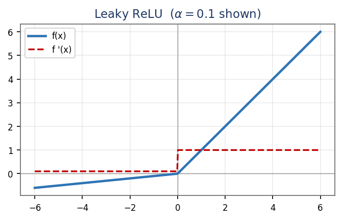
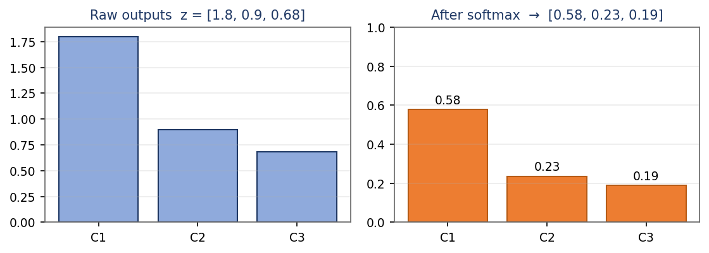
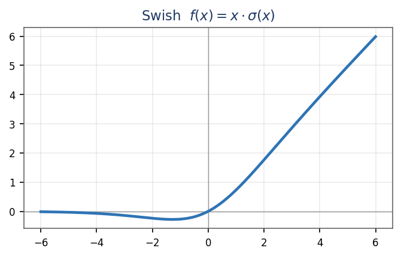
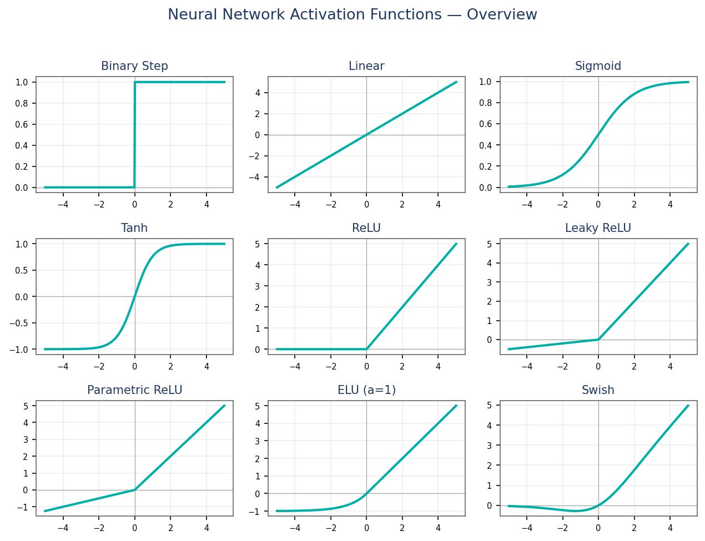

Step, sigmoid, tanh, ReLU, softmax and swish — the non-linear heart of every neuron.
Module 4 · Lecture notes by Dr. Abdulkarim Albanna
Core Neural Nets ~40 minPrerequisites: Module 3 (Neural Network Foundations). You should already be comfortable with a neuron's weighted sum \( z = w\cdot x + b \) and how a network stacks neurons into layers before starting here.
An activation function takes a neuron's weighted sum \( z = w\cdot x + b \) and decides what the neuron outputs. Without one, a neuron can only compute a straight line. The whole point of the functions in this module is to inject non-linearity — the ingredient that lets a network learn curved, complicated decision boundaries. We begin with the two simplest cases, both of which turn out to be inadequate as hidden-layer activations.
The binary step function fires only when the input clears a threshold \( t \):
\[ f(x)=\begin{cases}0 & x < t \\[4pt] 1 & x \ge t\end{cases} \]

With a step activation a neuron becomes a perceptron: it outputs 1 or 0 depending purely on whether \( w\cdot x + b \) is positive or negative (binary classification). It is beautifully interpretable, but it has two fatal flaws: it gives no multi-value outputs (so no multi-class problems), and its gradient is zero everywhere — so backpropagation has nothing to work with.
The linear, or identity, activation simply scales its input (with slope \( a \)):
\[ f(x) = a\,x \]

Also called “no activation” — it passes the weighted sum through unchanged, which is equivalent to plain linear regression. Its derivative is the constant \( a \), so the gradient carries no information about the input — every input pushes the weights the same way. Worse, stacking linear layers is pointless: a linear function of a linear function is still linear, so any number of linear layers collapses to a single layer. That makes the linear activation unusable as a hidden activation.
Non-linear activation functions solve both problems: they make backpropagation possible and let us stack many layers. The main ones — Sigmoid, Tanh, ReLU, Leaky ReLU, Softmax and Swish — are covered next.
The sigmoid, or logistic function, is the classic smooth switch. Its formula and range are:
\[ \sigma(x) = \frac{1}{1 + e^{-x}}, \qquad \text{range: } (0,\,1) \]
and its derivative has an elegant closed form:
\[ \sigma'(x) = \sigma(x)\,\bigl(1 - \sigma(x)\bigr) \]

It is S-shaped (the “logistic curve”): a large positive input maps to nearly 1 (neuron fires), a large negative input to nearly 0, and an input near 0 to about 0.5 (a fuzzy region). Because the output always lies in \( (0,\,1) \), it reads naturally as a probability — which is why sigmoid is the standard activation for the output of a binary classifier.
Saturation: a node is saturated when most of its outputs sit at the bounds of the activation function (near 0 or 1). Saturated neurons “kill” the gradient.
The hyperbolic tangent is a rescaled sigmoid. Its formula and range are:
\[ \tanh(x) = \frac{2}{1 + e^{-2x}} - 1, \qquad \text{range: } (-1,\,1) \]
and its derivative is:
\[ f'(x) = 1 - \tanh^{2}(x) \]

Tanh has the same S-shape as sigmoid, but it is zero-centered: negative inputs map to negative outputs and positive to positive. That symmetry is a genuine advantage over sigmoid — hidden-layer means stay near 0, which centers the data and makes learning in the next layer easier. In practice tanh is always preferred over sigmoid for hidden layers: both saturate, but tanh is zero-centered and its gradients are not restricted to one direction.
The Rectified Linear Unit is the default hidden activation of modern deep learning. Its formula is almost embarrassingly simple:
\[ f(x) = \max(0,\,x) \]
and its derivative is a clean 0/1 switch:
\[ f'(x) = \begin{cases}0 & x < 0 \\[4pt] 1 & x > 0\end{cases} \]

ReLU looks linear, but it is genuinely non-linear because of the kink at 0, and it has a usable derivative, so backpropagation works while staying extremely cheap to compute. It also produces sparse activation: any neuron whose weighted sum is negative outputs exactly 0 (like a Boolean gate), so not all neurons fire at once, which is efficient and often helpful. In practice it converges roughly \( 6\times \) faster than sigmoid/tanh.
Leaky ReLU is a one-line patch for the dying-ReLU problem: give the negative side a small non-zero slope \( \alpha \) (typically 0.01):
\[ f(x) = \begin{cases}x & x > 0 \\[4pt] \alpha\,x & x \le 0\end{cases} \qquad (\alpha \text{ small, e.g. } 0.01) \]

Because the negative side now has a small but non-zero slope, the gradient is never exactly zero (it is \( \alpha \) for \( x \le 0 \) and 1 for \( x > 0 \)), so a neuron can always nudge its weights back into a useful region — neurons can't die. Parametric ReLU (PReLU) uses the same formula but makes \( \alpha \) a learnable parameter: backpropagation finds the most appropriate value of \( \alpha \) for the task.
Softmax is the output-layer activation for multi-class classification. For a vector of \( K \) real scores \( z \), the \( i \)-th output is:
\[ \text{softmax}(z_i) = \frac{e^{z_i}}{\sum_{j} e^{z_j}} \]

Softmax turns \( K \) arbitrary real scores into a proper probability distribution: every output lies in \( (0,\,1) \) and all \( K \) outputs sum to exactly 1. This fixes the problem raw scores have (e.g. outputs 0.8, 0.9, 0.7 do not sum to 1, so they aren't comparable probabilities). It behaves like a combination of multiple sigmoids, making it the natural activation at the output layer for multi-class classification, where each output reads as “the probability this input belongs to class \( i \).”
Module 2 covered the numerically-stable version of softmax — subtract the maximum score from every \( z_i \) before exponentiating, i.e. \( \text{softmax}(z_i) = \dfrac{e^{\,z_i - \max_k z_k}}{\sum_{j} e^{\,z_j - \max_k z_k}} \). The result is identical, but it prevents \( e^{x} \) from overflowing on large scores.
Swish is a smooth, self-gated activation — the input multiplied by its own sigmoid:
\[ \text{Swish}(x) = x\,\sigma(x) = \frac{x}{1 + e^{-x}} \]
Being built from the sigmoid, its derivative is smooth and non-monotonic, with the compact form \( \text{Swish}'(x) = \sigma(x) + x\,\sigma(x)\bigl(1 - \sigma(x)\bigr) \).

Developed by Google, Swish matches or outperforms ReLU on very deep networks (depth \( > 40 \) layers) for hard tasks such as image classification and machine translation. Its key structural difference from ReLU is smoothness: it does not abruptly change direction at \( x = 0 \) — it bends smoothly below zero and back up. Small negative values are kept (they may still carry useful pattern information) while large negative values are driven toward 0 for sparsity — a win-win.

Seen together, the functions split cleanly into two families. The saturating functions — step, sigmoid and tanh — flatten out at both extremes, so their derivatives fall to nearly 0 for large \( |x| \) and gradients vanish in deep networks. The ReLU family — ReLU, Leaky/Parametric ReLU, and (smoothly) Swish — does not saturate on the positive side: the curve keeps climbing, so the gradient stays healthy no matter how large the input grows.
You do not have to agonise over this in practice. A handful of rules of thumb cover almost every network you will build:
| Problem type | Output activation |
|---|---|
| Regression | Linear (or ReLU if output \( \ge 0 \)) |
| Binary classification | Sigmoid / Logistic |
| Multi-class classification | Softmax |
| Multi-label classification | Sigmoid (per label) |
| Architecture | Hidden activation |
|---|---|
| Multilayer Perceptron (MLP) | ReLU |
| Convolutional Neural Network (CNN) | ReLU |
| Recurrent Neural Network (RNN) | Tanh and/or Sigmoid |
When selecting an activation function, always consider the problems it might face: vanishing and exploding gradients.
Every activation from this module, its formula and its derivative in one place:
| Activation | Function \( f(x) \) | Derivative \( f'(x) \) |
|---|---|---|
| Linear | \( f(x) = ax + c \) | \( f'(x) = a \) |
| Sigmoid | \( f(x) = \dfrac{1}{1 + e^{-x}} \) | \( f'(x) = f(x)\bigl(1 - f(x)\bigr) \) |
| Tanh | \( f(x) = \dfrac{2}{1 + e^{-2x}} - 1 \) | \( f'(x) = 1 - f(x)^{2} \) |
| ReLU | \( f(x) = \begin{cases}0 & x<0\\ x & x\ge 0\end{cases} \) | \( f'(x) = \begin{cases}0 & x<0\\ 1 & x\ge 0\end{cases} \) |
| Leaky / Parametric ReLU | \( f(x) = \begin{cases}\alpha x & x<0\\ x & x\ge 0\end{cases} \) | \( f'(x) = \begin{cases}\alpha & x<0\\ 1 & x\ge 0\end{cases} \) |
| Softmax | \( \dfrac{e^{z_i}}{\sum_{j} e^{z_j}} \) | outputs a probability vector (sums to 1); used with cross-entropy loss |
Work each one on paper before opening the solution — plugging numbers through these formulas once is worth ten readings. Part A drills each activation; Part B tests comparison and design judgement.
A neuron has weights \( w = [1,\,-2] \), input \( x = [2,\,1] \), bias \( b = 1 \), and threshold \( t = 0 \). Compute the weighted sum \( z \) and the step output \( f(z) \). Does the neuron fire?
\[ z = (1)(2) + (-2)(1) + 1 = 2 - 2 + 1 = 1 \]
Since \( 1 \ge 0 \) (the threshold), the step function gives \( f(1) = 1 \).
Yes — the neuron fires.
For \( f(x) = 0.5x \) and input \( z = 4 \): what is the output, and what is \( f'(4) \)? Why is a constant derivative useless for backpropagation?
\[ f(4) = 0.5 \times 4 = 2, \qquad f'(x) = 0.5 \text{ for every } x, \text{ so } f'(4) = 0.5 \] The derivative is a constant, unrelated to the input. Backpropagation relies on the gradient telling each weight how the input affects the loss — but a constant derivative carries no information about the input, so it cannot guide learning, and stacked linear layers collapse into one.
Compute \( \sigma(1) \) and \( \sigma'(1) = \sigma(1)\bigl(1 - \sigma(1)\bigr) \). Use \( e^{-1} \approx 0.368 \). Is this neuron closer to firing or not firing?
\[ \sigma(1) = \frac{1}{1 + e^{-1}} = \frac{1}{1 + 0.368} = \frac{1}{1.368} \approx 0.731 \] \[ \sigma'(1) = 0.731 \times (1 - 0.731) = 0.731 \times 0.269 \approx 0.197 \] Since \( 0.731 > 0.5 \), the neuron is closer to firing.
Compute \( \tanh(0.5) \) and its derivative \( 1 - \tanh^{2}(0.5) \). Use \( e^{-1} \approx 0.368 \). Why is a zero-centered output helpful here?
With \( x = 0.5 \), we need \( e^{-2x} = e^{-1} \approx 0.368 \): \[ \tanh(0.5) = \frac{2}{1 + e^{-1}} - 1 = \frac{2}{1.368} - 1 \approx 1.462 - 1 = 0.462 \] \[ 1 - \tanh^{2}(0.5) = 1 - (0.462)^{2} \approx 1 - 0.214 = 0.786 \] A zero-centered output means activations spread symmetrically around 0, so the next layer receives data that is already centered — gradients aren't pushed all in one direction, and learning is faster and more stable than with sigmoid.
Apply ReLU to \( z = [-0.5,\,2.3,\,-3,\,1] \) and give the gradient at each of the four values. Which neurons would stop learning, and why?
\[ \text{ReLU}(z) = [\,\max(0,-0.5),\ \max(0,2.3),\ \max(0,-3),\ \max(0,1)\,] = [\,0,\ 2.3,\ 0,\ 1\,] \] Gradients (\( 0 \) for negative inputs, \( 1 \) for positive): \[ f'(z) = [\,0,\ 1,\ 0,\ 1\,] \] The neurons at \( -0.5 \) and \( -3 \) output 0 with gradient 0 — their weights receive no update, so they stop learning (the dying-ReLU problem).
With \( \alpha = 0.1 \), compute \( f(-3) \), \( f(2) \), and the gradient at \( x = -3 \). Why can a Leaky-ReLU neuron never “die”?
\[ f(-3) = \alpha \cdot (-3) = 0.1 \times (-3) = -0.3 \quad (\text{negative side uses the } \alpha \text{ slope}) \] \[ f(2) = 2 \quad (\text{positive side is the identity}) \] Gradient at \( x = -3 \) is \( \alpha = \mathbf{0.1} \). Because the negative-side gradient is a small but non-zero \( \alpha \) rather than 0, the weights always keep updating — so the neuron can always recover and can never die.
For \( z = [1,\,2,\,3] \), compute the three probabilities. Use \( e^{1} \approx 2.72 \), \( e^{2} \approx 7.39 \), \( e^{3} \approx 20.09 \). Which class is chosen, and what do the values sum to?
Sum of exponentials: \[ 2.72 + 7.39 + 20.09 \approx 30.2 \] \[ \text{softmax}(1) = \frac{2.72}{30.2} \approx 0.090 \] \[ \text{softmax}(2) = \frac{7.39}{30.2} \approx 0.245 \] \[ \text{softmax}(3) = \frac{20.09}{30.2} \approx 0.665 \] \[ \text{softmax}(z) \approx [\,0.090,\ 0.245,\ 0.665\,] \] Class 3 wins (largest probability), and the three values sum to 1 — a valid probability distribution.
Compute \( \text{Swish}(1) = 1\cdot\sigma(1) \) and \( \text{Swish}(-2) = -2\cdot\sigma(-2) \). Use \( \sigma(1) \approx 0.731 \), \( \sigma(-2) \approx 0.119 \). Compare with \( \text{ReLU}(-2) \): what information does ReLU lose?
\[ \text{Swish}(1) = 1 \times 0.731 = 0.731 \] \[ \text{Swish}(-2) = -2 \times 0.119 \approx -0.238 \] \[ \text{ReLU}(-2) = \max(0,\,-2) = 0 \] ReLU maps every negative input to exactly 0, so it discards all information about how negative the input was. Swish keeps a small negative value (\( \approx -0.238 \)), preserving pattern information that a plain ReLU would throw away.
From the gallery, which functions saturate for large \( |x| \)? Then rank ReLU, Tanh and Sigmoid by their output at \( x = 2 \).
Step, sigmoid and tanh saturate for large \( |x| \) (their curves flatten, so the gradient shrinks to nearly 0). ReLU — and Leaky ReLU, PReLU and Swish — do not saturate on the positive side.
At \( x = 2 \):
\[ \text{ReLU}(2) = 2, \qquad \tanh(2) \approx 0.964, \qquad \sigma(2) \approx 0.881 \]
Ranking (largest first): \( \text{ReLU}(2) = 2 \;>\; \tanh(2) \approx 0.964 \;>\; \sigma(2) \approx 0.881 \).
Choose hidden + output activations for: (a) predicting a house price, (b) recognizing a handwritten digit (0–9), (c) tagging a photo with several labels at once. Justify each choice in one sentence.
(a) House price — hidden: ReLU; output: Linear. This is regression with an unbounded continuous target, so the output must be able to take any real value.
(b) Digit 0–9 — hidden: ReLU; output: Softmax. Ten mutually-exclusive classes need a probability distribution that sums to 1, which softmax provides.
(c) Multi-label photo tags — hidden: ReLU; output: one Sigmoid per label. Labels are not mutually exclusive, so each is an independent yes/no probability rather than a single shared distribution.
Complete the table for \( x = -2,\,0,\,2 \): compute \( \sigma(x) \), \( \tanh(x) \), \( \text{ReLU}(x) \), Leaky ReLU\( (x) \) (\( \alpha = 0.01 \)), and \( \text{Swish}(x) \). Use \( e^{2} \approx 7.39 \), \( e^{-2} \approx 0.135 \), \( e^{4} \approx 54.6 \). Which functions give exactly 0 at \( x = 0 \), and which do not?
| \( x \) | \( \sigma(x) \) | \( \tanh(x) \) | \( \text{ReLU}(x) \) | Leaky (\( \alpha=0.01 \)) | \( \text{Swish}(x) \) |
|---|---|---|---|---|---|
| \( -2 \) | \( \approx 0.119 \) | \( \approx -0.964 \) | \( 0 \) | \( -0.02 \) | \( \approx -0.238 \) |
| \( 0 \) | \( 0.5 \) | \( 0 \) | \( 0 \) | \( 0 \) | \( 0 \) |
| \( 2 \) | \( \approx 0.881 \) | \( \approx 0.964 \) | \( 2 \) | \( 2 \) | \( \approx 1.762 \) |
Sample working at \( x = -2 \): \( \sigma(-2) = \tfrac{1}{1+e^{2}} = \tfrac{1}{8.39} \approx 0.119 \); \( \tanh(-2) = \tfrac{2}{1+e^{4}} - 1 = \tfrac{2}{55.6} - 1 \approx -0.964 \); \( \text{Swish}(-2) = -2 \times 0.119 \approx -0.238 \).
Exactly 0 at \( x = 0 \): tanh, ReLU, Leaky ReLU and Swish all give 0. Sigmoid does not — \( \sigma(0) = 0.5 \).
Next up: Module 5 — XOR with McCulloch–Pitts Neurons. Now that you know what a neuron can compute, we'll see exactly why a single neuron cannot solve XOR — and how combining neurons into a small network cracks it.